<div class="background">
  <div class="page"> 
    <div class="per-heading">
      <h2 class="page-title"><u>PLAYER EFFICIENCY RATING</u></h2>
      <p> 
        Player Efficiency Rating, or PER, is an NBA advanced stat that can be used to determine the quality
        of play of individual players. Since a team needs different players to fill different roles, no classic
        statistic will be an adequate identifier of how good a player is performing. John Hollinger, a columnist
        at ESPN came up with the formuala for PER as a way to have a single stat to quantify the value of a players
        contribution to his team. And although the statistic is far from perfect it remains a strong indicator of
        a players value. (See the formual for PER and learn more about it at 
        <a href="https://www.basketball-reference.com/about/per.html/" target="_blank">basketball-reference.com</a>).
      </p>
    </div> 

    <div class="sixteen">
      <p>
        PER can be used to compare two players against one another, even if ones a guard and the other's a center,
        but it can also be using to track an individual players overall performance over an extended period of time.
        In this example we are working with season-long player stats beginning with the 2002/03 season through the
        2017/18 season, a range of 16 years. To the right, you can see a portion of the raw data that we pulled from 
        <a href="https://www.kaggle.com/datasets" target="_blank">Kaggle</a>.
      </p>
      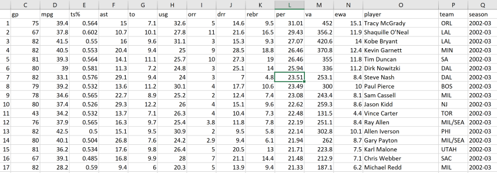
    </div>
    <div class="ten416">
      <p>
        In this image you can see the top PER performers from the 2002/03 season. Each row in the table
        contains one players statistical information for one season.  This file contains information on 16 seasons,
        so the most rows any given player could have is 16. Coincdnetly, there are exactly ten players who played
        in all 16 season from 2002 through 2017 and it is those players that we will be looking at. More specifically,
        we will look at each player's PER by year to see if there is any corilation between the players by year....
        Does each player have a steady decline as they get older? Do any players get better with age? Was a specific 
        year better or worse for these players accross the board? Using basic data analysis tools we can answer all of 
        these questions, and many more. 
      </p>
      <p>
        So how did we find out that that there were ten  players whos played in all 16 seasons we are working with?  
        We know that each player shows up once per season, so we know that the number of times a player appears is 
        equal to the number of seasons they played.  So how to we go about totaling the number of seasons each player 
        played?  And how to we make that number available to us in our data frame?
      </p>
      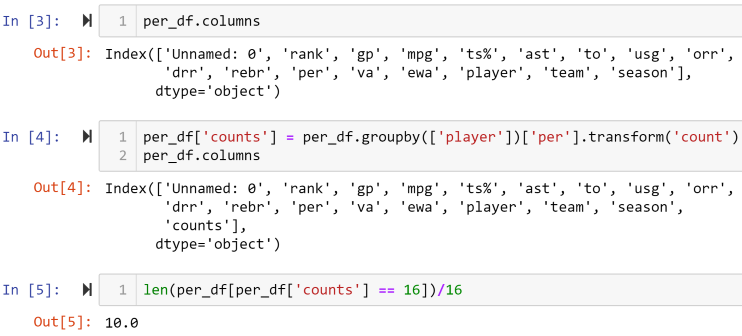
      <p>
        What we need to do is count the number of times each player appears, and then append that number to each row. 
        <span>If a player played in 16 seasons, the number 16 should appear in all 16 of that players rows.</span>  
        In the image above, cells one and two were importing the needed librarys and reading our CSV file as we have
        done before.  In cell three we view all the columns to we know what data we do or don't have, <span>note that 
        this dataset has far less columns then the sets we've used previously.</span> In cell four, we are adding a 
        new column to our data frame that we will name <span>COUNTS</span>.  The right side of the equation in cell four 
        determines what value will be filled into each row in the <span>COUNTS</span> column.  We group the data frame by each 
        player's name and then count the number <span>PER</span> values each player have that 'count' is then the value 
        added in the <span>COUNTS</span> column.  When we print our the columns again we can now see that <span>COUNTS</span>
        is the last column in our data frame. In cell five we determine how many players played in all sixteen seasons.  We 
        limit our data frame to inlcude only rows where the value of <span>COUNTS</span> is equal to 16.  We then need to 
        divide that number by 16 because each player in that set appears 16 times and we only want to know one instance of 
        each player.  
    </div>

    <div class="ten-players">
      <div class="all-16">
        <p>Here we set a new data frame, <span>df_16</span>, to only include the ten players that played all sixteen seasons.</p>
        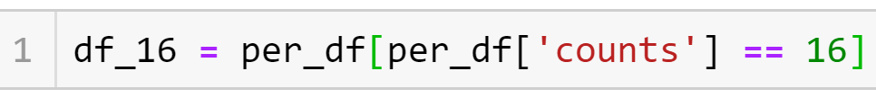
      </div>
      <div class="each-player">
        <p>And then here we break that data frame down even samller into ten new ones.  (<span>One data frame for each player</span>)</p>
        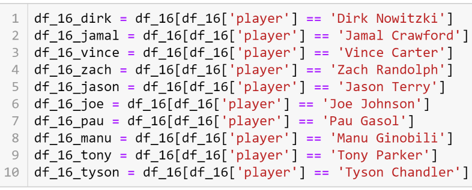
      </div>
    </div>

    <div class="per-graph-code">
      <p>
        We can now create line graphs for each player that demsontrate their PER by season.  below is the code used to create the graph of 
        Dirk Nowitzki, but for all the players the code remains the same other than which data frame we're using, the graph's title, and 
        of course the name of the jpeg file.
      </p>
      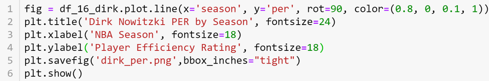
      <p>
        Below are the charted PER stats for each player.  Note that the scale of these charts are not identical (<span>the range of the 
          y-axis' are different</span>).  This is because these charts are meant to clearly display the fluctuation of each player's 
          efficiency on a year to year basis and not to compare one player to another.
      </p>
    </div>

    <div class="graphs">
      <div class="fiveg">
        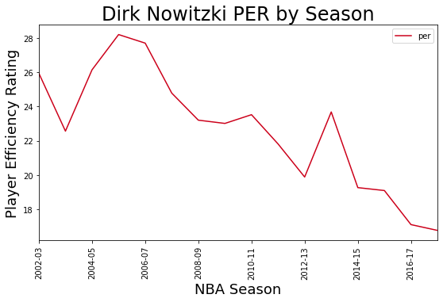
        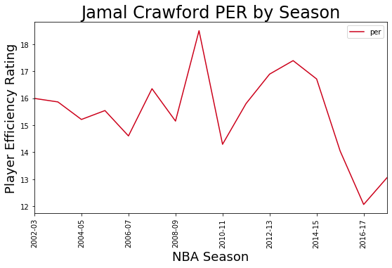
        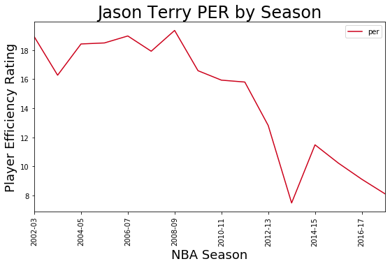
        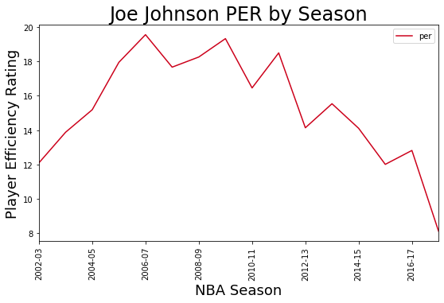
        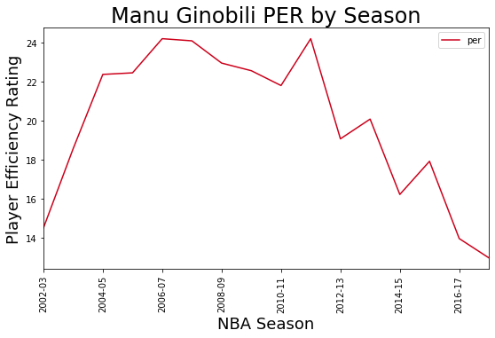
        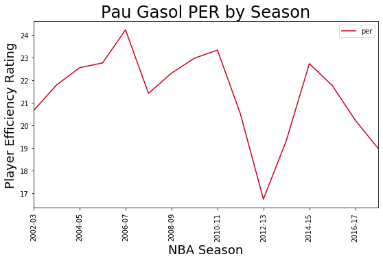
        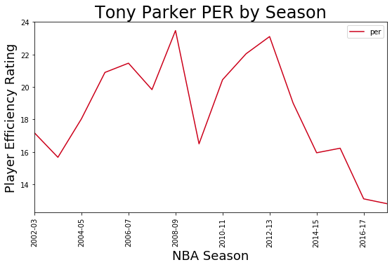
        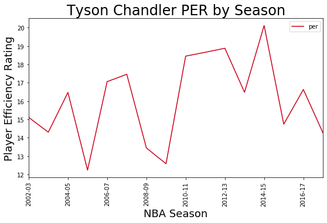
        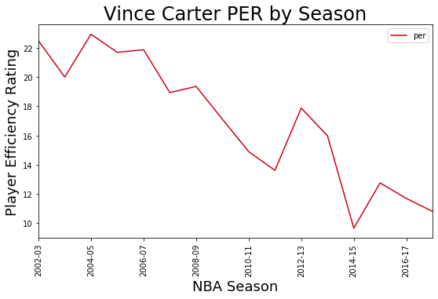
        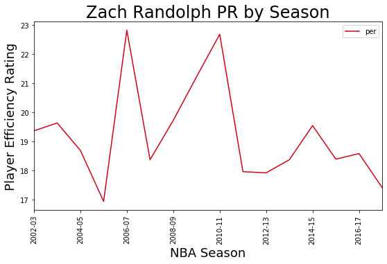
      </div>

      <div class="graph-sum">
        <p>
          There are far too many unknowns to take too much away from these graphs.  For example, they do not consider the players actual 
          age or what team they are on. Playing around other good players will lift your own level of play and inversely it is dificult to 
          perform well when you don't have other strong players around you.  These graphs do indicate that there is not a linear trajectory 
          of a players career, <span>players are always going to have their ups and their downs</span>.  Beyond that the only CLEAR takeaway
          is the obvious one is that as players age their bodies physically deteriorate and their performance will suffer later in their 
          careers.  Regardless of their level of performance playing at least 16 years in the NBA is a noteworthy feat in and of itself.
        </p>
      </div>
      <hr>

      <div class="all-in-one">
        <p>
          Below we can see how these ten players player efficiency ratings compare to one another, the code to plot this graph can be found 
          at the bottom.
        </p>
        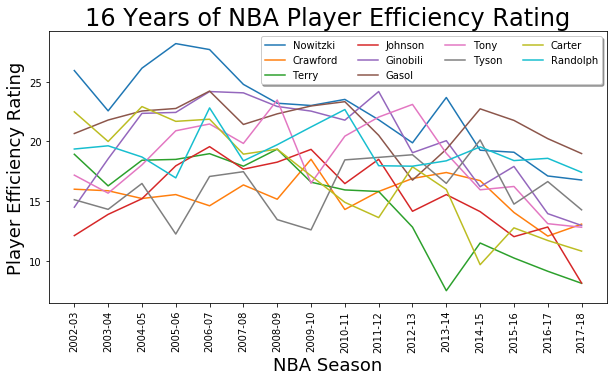
        <h3>CODE BELOW...</h3>
        <hr><hr><hr><hr><hr>
        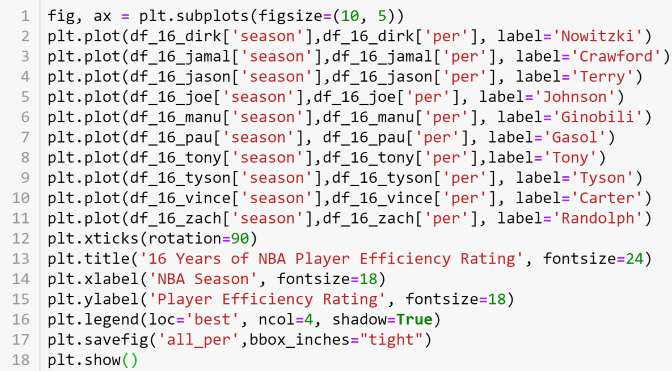
      </div>
    </div>

    <div class="navigate">
        <a [routerLink]="['/height']">PREVIOUS PAGE</a>
        <a [routerLink]="['/per-advanced-stats']">NEXT PAGE</a>
    </div>
    
  </div>
</div>   